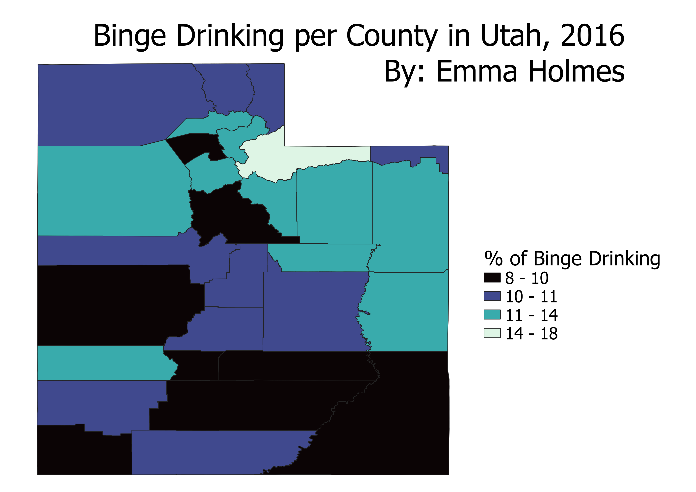

Homework 7: Make a Chloropleth or Proportional Symbol Map
By: Emma Holmes
Chloropleth Map

This chloropleth map shows the percentage of binge drinking in each county in Utah in 2016.
I chose this data because I saw it on the Utah's state government's data website and was curious about what
the data would show in terms of each county. I was primarily curious about this because Utah is a primarily
Mormon state and the Church of Jesus Christ of Latter-Day Saints (the primary Mormon church) does not allow
drinking. The percentages of binge drinking seems low considering it is all below 25%, but I do not have the data from another state to say
this officially. It is interesting that the county with the highest rate of binge drinking is Summit County
which is also the county with the lowest percentage of Mormons according to 2020 census data.
(Religious Identity accross Utah according to Census Data in 2020)
GeoJSON
Cleaned CSV file
Data for Binge Drinking by County in Utah 2016